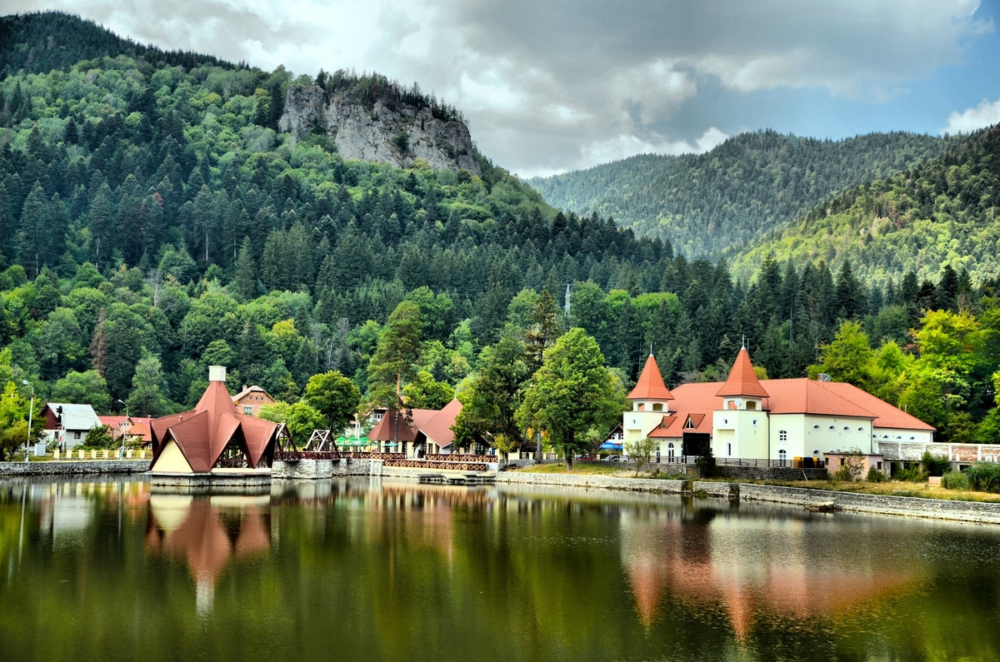

De la inceput iti spunem ca o data ce vei ajunge la Baile Tusnad iti va fi foarte greu sa te hotarasti cum
iti vei petrece timpul liber. Statiunea este amplasata intr-o zona foarte frumoasa din inima Carpatilor, in mijlocul
unui peisaj de poveste oferit de masivul Harghita, lacul Ciucas, muntii Bodoc si intreaga depresiune a Ciucului – nu
degeaba a fost supranumita “mica Elvetie”!
Si mai frumos este ca la Baile Tusnad, accesul nu iti este limitat doar la sedinte de tratament in incinta bailor termale sau
la mofeta; esti liber sa te bucuri de natura urmand traseele de drumetie (destul de multe la numar), sa prinzi pastravi, sa schiezi
(daca alegi sa vizitezi statiunea in sezonul de iarna), sa faci trasee de cicloturism si sa te bucuri in general de tot ceea ce
intalnesti. .
Statiunea

Lacul Ciucas
Este una dintre cele mai frumoase staţiuni montane nu numai din judeţul Harghita, ci şi din ţară,
accesibilă pe DN 12 sau pe linia CF 400 Braşov - Deda şi se află la 32 km sud de Miercurea-Ciuc, 37 km
nord de Sfântu Gheorghe, 67 km de Braşov şi 35 km de Baraolt. Băile Tuşnad a fost declarat oraş în anul 1968,
fiind şi cel mai mic din România (1709 de locuitori conform recensământului din 2002). Staţiunea, de importanţă
internaţională, se află într-un loc deosebit de frumos, pe versantul vestic al masivului vulcanic Ciomad, în defileul Oltului
la 656 m altitudine, în mijlocul unor păduri de brazi şi foioase, având un aer deosebit de curat, foarte bogat în ioni negativi.
Oltul este cursul de apă principal al staţiunii, iar Lacul Ciucaş care este plasat în mijlocul staţiunii a fost creat în scop
turistic. Masivul Ciomad este una dintre cele mai tinere formaţiuni vulcanice din Carpaţi, fenomenele vulcanice în zona
Tuşnadului au avut un rol important în formarea şi dezvoltarea staţiunii, iar cele postvulcanice fiind foarte active,
reprezintă un factor important în viaţa staţiunii Băile Tuşnad. Prezenţa emanaţiilor de CO2 şi a apelor minerale au permis
practicarea tratamentelor terapeutice şi au creat condiţiile necesare pentru ca oraşul să devine o staţiune balneoclimaterică
importantă.
Baile Tusnad sunt situate in partea sudica a depresiunii Ciucului, la o altitudine de 650 m, intre muntii Harghita si Bodoc, intr-un
splendid defileu al Oltului. Pozitia in teritoriu ii confera un cadru deosebit de pitoresc, cu aer puternic ozonat, bogat in aerosoli
rasinosi si ioni negativi care fac ca statiunea sa dispuna de un bioclimat montan tonic, favorabil reconfortarii psihice.